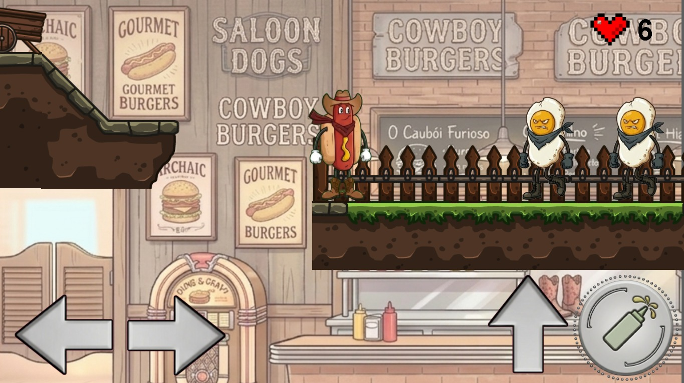
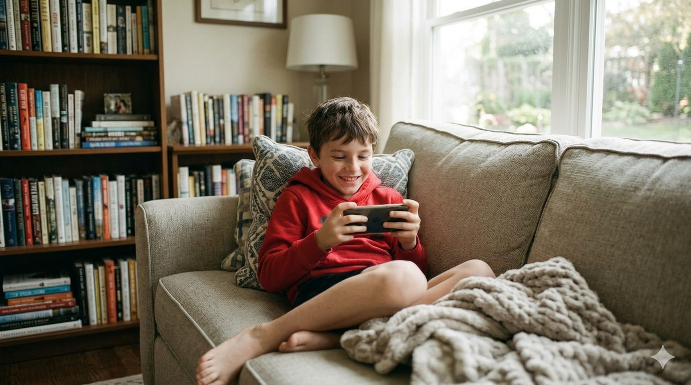
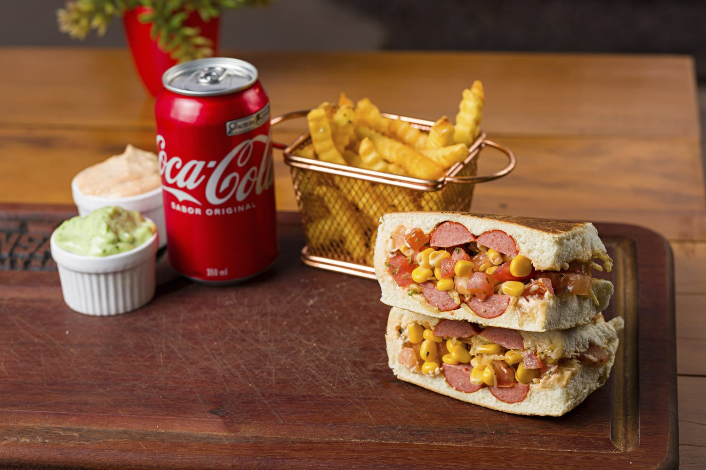
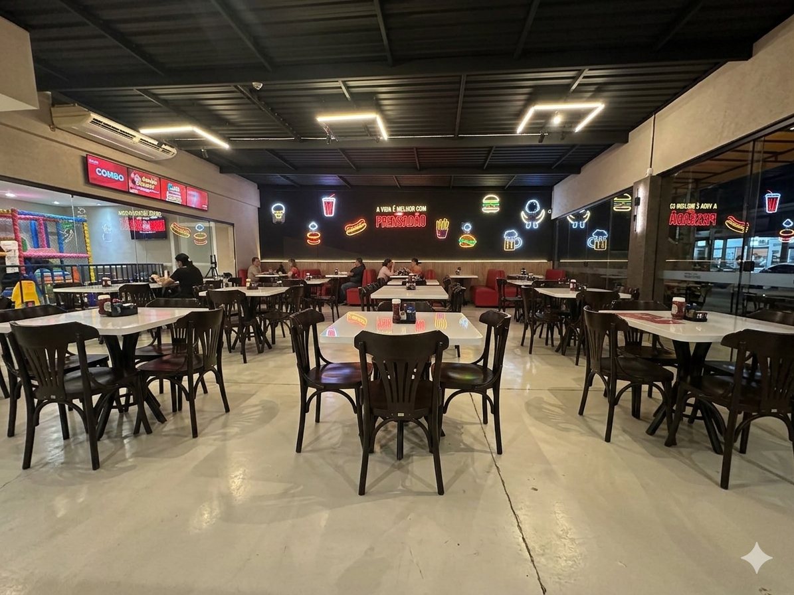
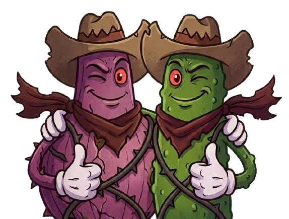

SOBRE O JOGO
Bem-vindo ao mundo do Prensadão Game!
Aqui, você controla um herói muito especial: um hot dog aventureiro que enfrenta inimigos como cebolas, picles e ovos usando seu poderoso molho especial! Ao longo da jornada, o objetivo é coletar recompensas comestíveis para satisfazer os clientes famintos que aguardam no final de cada fase.

Nossa missão
Percebemos que muitas crianças que visitam nossa dogueria não conseguem aproveitar o espaço kids, que é destinado aos menores. Pensando nisso, desenvolvemos uma forma diferente de entretenimento, um jogo digital envolvente, feito especialmente para crianças a partir de 9 anos.

Muito além de um jogo
Mais do que apenas um passatempo, o Prensadão Game é uma extensão da experiência da nossa dogueria. Enquanto as famílias aproveitam seus momentos, as crianças maiores também podem se divertir, explorar e se desafiar dentro do nosso universo cheio de sabor e aventura.

Sobre o Prensadão
O Prensadão é mais do que uma dogueria — é um espaço pensado para toda a família. E agora, também é o lar de um jogo feito com carinho para garantir que ninguém fique de fora da diversão!

Gênero:
Plataforma:
Preço:
Classificação:

JOGUE AGORA